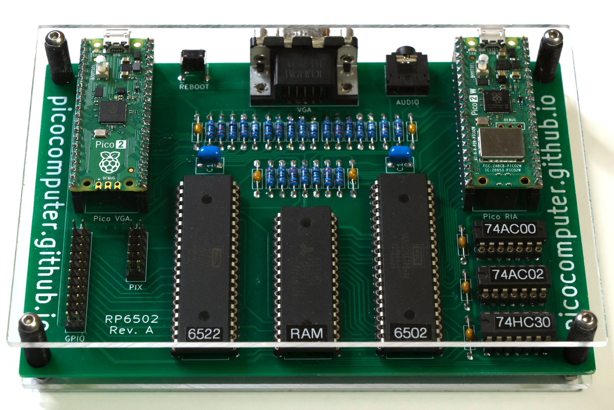

Picocomputer 6502¶
All the soul of the 6502. None of the compromises. You’re welcome.
The Picocomputer 6502 is an open source, modern-retro gaming computer built around a real WDC 65C02. The design philosophy: keep the essence of programming a 6502 and 6522, then rethink everything else.
{kind=link}

Community¶
Specs¶
CPU — WDC 65C02 CPU and WDC 65C22 VIA
RAM — 64 KB system + 64 KB extended
Video — VGA and HD output; 3 planes, scanline programmable
Sound — PSG and OPL2 FM
Clock — Real-Time Clock with DST
Connectivity¶
USB — keyboard, mouse, gamepads, UART serial, NFC, floppy drives, and flash drives
Bluetooth LE — keyboard, mouse, and gamepads
WiFi — NTP time sync, Hayes modem emulation for dialing into BBSs
Programming¶
Protected OS — 32-bit operating system; uses no 6502 RAM
POSIX-compatible API — stdio.h and unistd.h for cc65 and llvm-mos
FAT filesystem — read and write files on any USB flash or floppy drive
ROM flash — 1 MB of onboard flash for installing and auto-booting ROMs
Build It¶
100% through-hole construction. No IC programmer needed. Hundreds of people have built one, typically for under $100 USD. You can also have a unit manufactured in China — no soldering required. All parts are currently in production; the Raspberry Pi Pico 2 is guaranteed until at least January 2040.
Hardware: Schematic and manufacturing information.
Documentation¶
The Picocomputer 6502 is a reference design for RP6502 modular hardware. The only required module is the RP6502-RIA.
RP6502-RIA: Interface adapter for the 6502, akin to CIA, VIA, and ACIA devices.
RP6502-RIA-W: Wireless features available when using the “Pico 2 W”.
RP6502-VGA: Optional video adapter.
RP6502-OS: The operating system and application programming interface.